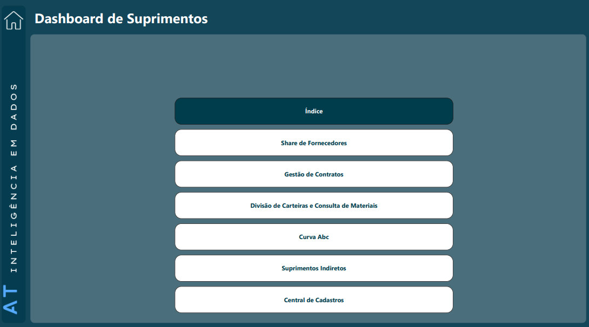
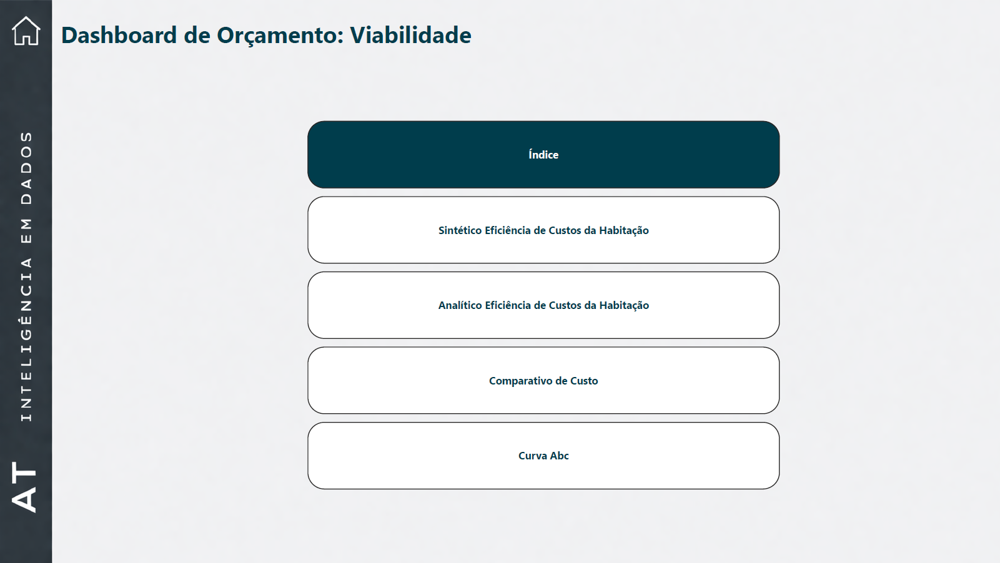
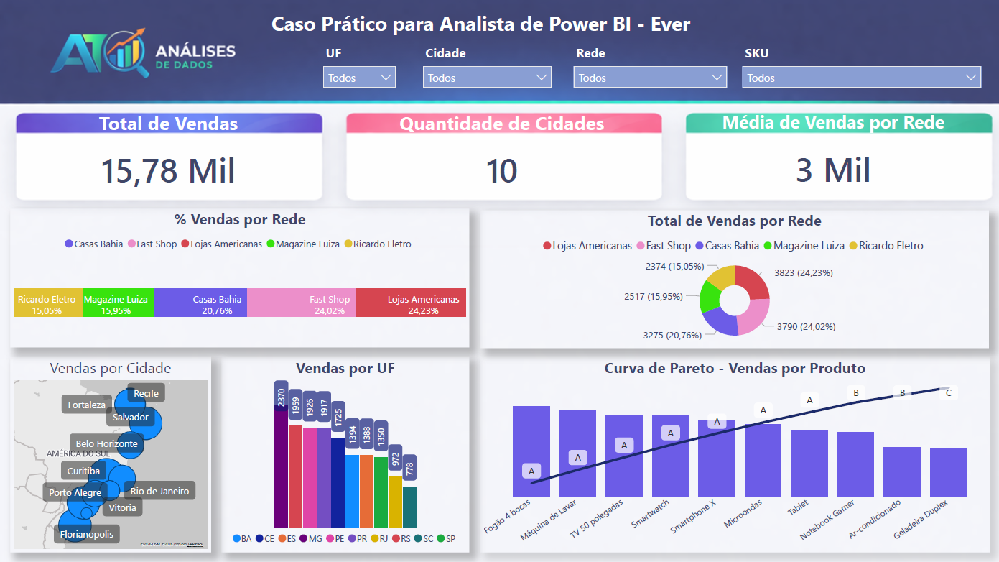

Analista de Dados | Power BI | Business Intelligence
Atuo com análise de dados, desenvolvimento de dashboards e estruturação de indicadores para apoiar decisões estratégicas. Minha experiência envolve conectar dados, operação e negócio, gerando visibilidade, padronização e apoio à tomada de decisão.
Minha atuação combina visão analítica, entendimento de processos e proximidade com áreas de negócio, com foco em entregar soluções aplicáveis à realidade operacional e gerencial.
Formação multidisciplinar em engenharia, gestão e negócios, com base técnica e visão estratégica aplicada a dados, processos e tomada de decisão.
UNIVESP
Universidade Anhembi Morumbi
UNIP
UNIP
Atuo desde a origem do dado até a camada analítica, estruturando soluções que combinam coleta, padronização, integração e visualização para apoiar decisões com mais consistência.
Desenvolvimento de painéis em Power BI com foco em leitura gerencial, acompanhamento de indicadores e apoio à decisão.
Criação de métricas aderentes à operação e à gestão, conectando regra de negócio, desempenho e priorização.
Leitura de dados para identificar desvios, oportunidades, eficiência operacional e direcionadores do negócio.
Redução de esforço manual por meio de consolidação, atualização estruturada e automação de fluxos analíticos.
Desenvolvimento de soluções para captura de informações na origem, com foco em padronização, qualidade e governança.
Tratamento de inconsistências, revisão de cadastros e normalização de dados para aumentar confiabilidade e usabilidade.
Integração de múltiplas fontes e estruturação de bases analíticas para garantir rastreabilidade, consistência e escala.
Criação de aplicações para apoiar processos, coleta estruturada e melhoria da qualidade dos dados desde a origem.
Projeto desenvolvido para gestão estratégica de suprimentos, com foco em visibilidade operacional, controle gerencial e apoio à tomada de decisão em diferentes frentes da área.
Estrutura inicial do projeto e navegação entre os módulos analíticos.

Tela inicial do projeto, estruturada para facilitar a navegação entre os principais módulos analíticos do dashboard.
A organização por páginas permite acessar rapidamente visões de fornecedores, contratos, carteiras, curva ABC, suprimentos indiretos e central de cadastros.
Projeto voltado à análise comparativa de custos, eficiência e suporte à tomada de decisão em cenários de orçamento e viabilidade, com visões sintéticas, analíticas e comparativas para avaliação do custo da habitação.
Estrutura inicial do projeto e navegação entre os módulos analíticos.

Tela inicial do dashboard de Orçamentos: Viabilidade, organizada para facilitar o acesso às visões sintética, analítica, comparativa e de curva ABC.
Essa estrutura centraliza a navegação do projeto e melhora a leitura executiva das análises de custo e eficiência da habitação.
Solução desenvolvida para substituir um processo manual em Excel utilizado na coleta de dados de custos e quantitativos, com mais de 8 mil linhas por mês, reduzindo erros de preenchimento, padronizando informações e alimentando a base utilizada nos dashboards de custo habitacional.
Dashboard desenvolvido para análise de vendas com foco em visão comercial consolidada, distribuição por rede, cidades, estados e curva de Pareto por produto.
Painel consolidado com indicadores de vendas, distribuição por rede, mapa por cidade e curva de Pareto.

Dashboard construído para análise executiva de vendas, reunindo os principais indicadores comerciais em uma única visão.
A tela apresenta total de vendas, quantidade de cidades, média de vendas por rede, participação por rede, vendas por cidade, vendas por UF e curva de Pareto por produto, permitindo leitura rápida da distribuição comercial e identificação de concentração de resultado.